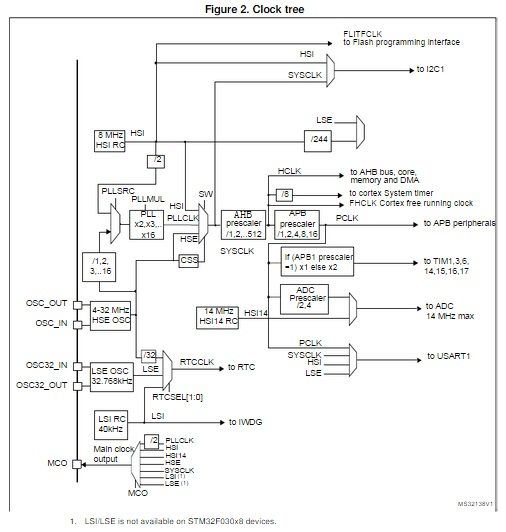

STM32为了低功耗做了很多很多的努力，其中很重要的一点就是，STM32的时钟能够非常灵活的控制，尽量让各个模块能够以满足需求的最低频率工作，以降低功耗。
STM32可以有5个时钟源，分别是HSI（High Speed Internal Clock signal）、HSE（High Speed External Clock signal）、LSI（Low Speed Internal Clock signal）、LSE（Low Speed External Clock signal）和PLL（Phase-Locked Loop）。
HSI与HSE可以互为替换，他们都是为系统提供时钟驱动信号，以维持系统运行。HSI是内部高速时钟信号，是一个内置的RC震荡电路，频率为8Mhz，但是由于是RC电路，受温度影响较大，不太准确。HSE是外部震荡电路，即外接的振荡源，通常是一个8Mhz的晶振，可以为系统提供准确的时钟。
然而，通常HSI或HSE产生的时钟信号是不会直接驱动系统的，因为8Mhz的频率明显太低。于是，PLL出现了。PLL把HSI或者HSE产生的时钟信号的频率放大一定的倍数，然后再供给给系统核心使用，这样才能达到足够高的频率。
所谓系统核心，包括CPU、总线、Flash、串口、I2C、ADC等把时钟信号当做驱动信号的组件。
LSI和LSE也可以互为替换，他们的作用是提供计时功能。LSI是内部低速时钟信号，是一个内置的RC震荡电路，频率为40Khz，和HSI一样，它不一定准确。LSE是外部震荡电路，可以外接晶振源，通常是一个32.768KHz的晶振，为系统提供准确的时间。
计时功能的使用者是看门狗、RTC时钟等用户时间。
当然，他们之间也没有绝对的关系，他们复杂的关系如图：

我就直接举例说明了吧。
假设我接了一个8Mhz的外部晶振，然后我想使用这个外部晶振作为PLL的输入源，然后PLL倍频5倍，输出40Mhz的时钟信号。AHB预分频器把这40Mhz（即HCLK）直接送到AHB总线上。而APB预分频器再把AHB输出的40Mhz进行4分频，输出10Mhz（即PCLK）到APB总线上。
代码如下：
void rcc_init()
{
//将RCC寄存器重新设置为默认值
RCC_DeInit();
//开启HSE（开启后将会取代HSI）
RCC_HSEConfig(RCC_HSE_ON);
//等待HSE稳定工作
if(RCC_WaitForHSEStartUp()!=SUCCESS)
return;
//设置HCLK为SYSCLK的1分频
RCC_HCLKConfig(RCC_SYSCLK_Div1);
//设置PCLK为HCLK的4分频
RCC_PCLKConfig(RCC_HCLK_Div4);
//设置Flash延迟为1个时钟周期
FLASH_SetLatency(FLASH_Latency_1);
//开启Flash预读缓存
FLASH_PrefetchBufferCmd(ENABLE);
//设置PLL的输入源是HSE,输出5倍频
RCC_PLLConfig(RCC_PLLSource_PREDIV1,RCC_PLLMul_5);
//开启PPL
RCC_PLLCmd(ENABLE);
//等待PLL工作
while(RCC_GetFlagStatus(RCC_FLAG_PLLRDY)==RESET);
//设置系统时钟是PLL
RCC_SYSCLKConfig(RCC_SYSCLKSource_PLLCLK);
//等待PLL被设置为系统时钟
while(RCC_GetSYSCLKSource()!=0x08);
}
此时CPU的时钟频率就是8Mhz*5=40Mhz，如果把
RCC_PLLConfig(RCC_PLLSource_PREDIV1,RCC_PLLMul_5);
改为
RCC_PLLConfig(RCC_PLLSource_PREDIV1,RCC_PLLMul_4);
那么CPU的时钟频率就是8Mhz*4=32Mhz了。